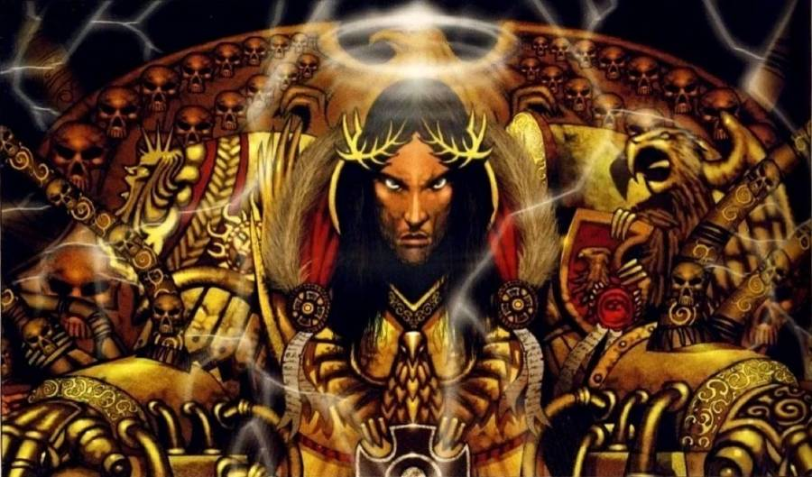

Golden Throne
| Golden Throne | |
|---|---|
 The Golden Throne atop its stepped dais in the Sanctum Imperialis, from a Palace fresco Artwork © Games Workshop | |
| Type | Psychic life-support and warding machine |
| Location | Throne Room, Sanctum Imperialis, Imperial Palace, Terra |
| Origin | An ancient core found by the Emperor in the Unification Wars; rebuilt as the heart of his Webway project before the Heresy |
| Occupant | The Emperor of Mankind, since 014.M31 |
| Tended by | Adeptus Mechanicus, Adeptus Custodes |
| Power source | Psychic sacrifice; the souls of psykers |
| Linked systems | The Astronomican; the sealed portal into the Imperial Webway extension |
The Golden Throne is the machine on which the Emperor of Mankind has sat since the end of the Horus Heresy. It is a vast cybernetic life-support mechanism in a chamber deep below the Imperial Palace on Terra, and it keeps the Emperor's mortally wounded body alive. It is fed by the psychic energy of the psykers sacrificed to it, and through it the Emperor, whose mind remains active in the Warp, sustains the Astronomican that guides the Imperium's ships.[1][2]
The Throne was not built for this purpose. It was the heart of the Emperor's secret project to open a Human-made extension of the Webway, and the project lay in ruins when the Heresy broke out. After his duel with Horus, the machine was modified in haste to save his life, and it has been the keystone of the Imperium ever since.[3][2] It is old and failing, and the Adeptus Mechanicus has not been able to repair it.
Origins
[edit]The Webway project
[edit]The core of the Throne is older than the Imperium. Its origin in the Dark Age of Technology is unknown, and the Emperor found it in the Unification Wars, buried in sunken ruins beneath a desert of Asia. It served as a psychic amplifier and as a portal into the Webway, the hidden network of tunnels that lies beside the Warp.[3][2]
After the Triumph of Ullanor the Emperor returned to Terra to take up the work in earnest. Tens of thousands of Mechanicum tech-priests and labourers rebuilt the machine in the dungeons of the Palace as a chair above great golden doors, a portal into a new Human-built reach of the Webway. The Emperor hoped to travel the galaxy without the Warp and, in time, to free Mankind of its dependence on psykers.[3][2]
The work was done in secret. Even the primarchs and Malcador the Sigillite were not told its purpose. Early in the Horus Heresy, Magnus the Red sent a psychic warning to the Emperor that broke the shielding of the Webway extension, and daemons flooded in. The Adeptus Custodes and the Sisters of Silence held the portal in the War Within the Webway, and afterwards only the Emperor's power, drawn through the Throne, kept the gate shut. The core of the Throne survived, but the project lay in ruins.[3][2]
The Siege of Terra
[edit]
Before the Emperor went out to meet Horus, Malcador the Sigillite took his place on the Throne to hold the portal against the daemons beyond it. The task was beyond him, and it consumed him within hours. When Horus had been killed aboard the Vengeful Spirit and the Emperor was mortally wounded, Rogal Dorn brought him back to the Throne, where the tech-priests took Malcador from it. In his last moments Malcador gave what strength remained to him to the Emperor, who woke briefly to give his final orders.[4][2]
The tech-priests modified the machine in haste to sustain the Emperor's crippled body. Accounts differ on who directed the work: some name the Emperor himself, working through the Mechanicum, and others name Rogal Dorn.[5][2]
Description
[edit]
The Throne stands at the top of a stepped dais, deep within the Sanctum Imperialis. It is a vast baroque construction of gilded metal and ancient machinery atop a golden pyramid, surrounded by masses of cables and mechanisms of which almost nothing is understood. The throne room lies beneath the Inner Palace, past the Eternity Gate and the Silver Door, and is almost four miles long and half a mile high. It is wrapped in fog and stasis fields, and three hundred Adeptus Custodes of the Companions keep watch before it.[1][2]
The Emperor's body is held in stasis, desiccated and slowly decaying. The Ecclesiarchy teaches that his mind remains fully active in the Warp, from which he directs the Astronomican and struggles to hold the powers of Chaos away from Terra.[1][2] Few living mortals have stood in the room: the Custodes, the tech-priests who maintain the machine, and the psykers brought to be consumed.
Operation
[edit]Psychic sacrifice
[edit]The Throne's power is derived from the psychic energy of living psykers. The Emperor takes the life energy of a thousand psykers each solar day. The psykers are gathered from every world of the Imperium by the Black Ships of the Adeptus Astra Telepathica and brought to Terra.[1][a]
The sacrifice is considered by the Imperial Cult to be a holy act. The psykers, they teach, are martyrs who give their souls to the Emperor. Detractors see only a machine fed with the lives of those cursed with the gift of witchery.[5][2]
The Astronomican
[edit]The Throne is believed to be the source of the Astronomican, a psychic beacon that allows Navigators to guide ships through the Warp. The Astronomican is the product of the Emperor's will, amplified by the Throne, and it reaches some seventy thousand light years across the galaxy. The Adeptus Astronomica keeps the Chamber of the Astronomican on Terra, where ten thousand trained psykers also feed the beacon. The opening of the Great Rift has cut off a large part of the Imperium from it.[1][6]
Failing machinery
[edit]The Golden Throne is now over ten millennia old and is failing. No blueprints, specifications or rites of maintenance remain, and the tech-priests who tend it face a harder task with each passing century. Its mechanisms have developed recurring faults beyond their ability to repair. Many repairs have been proposed, among them calling on alien artificers, but most were rejected and few have been completed. The decay was admitted only after the end of the 13th Black Crusade in 999.M41.[7][2]
Unless something is done, the life-support systems will eventually fail and the Emperor will die. Opinion varies on what would follow: some hold that it would destroy the Imperium, others that it would save it. A dozen expeditions in search of a remedy have been launched by the Cult Mechanicus, among them an Inquisitorial war procession sent into the Webway. Early in the Indomitus Crusade, Shield-Captain Heraclast Vadrian of the Custodes obtained leave from the Captain-General to seek a remedy at the lost forge world of Morvane, and no word of him has returned.[8][2]
In the Imperial Cult
[edit]The Imperial Cult regards the Throne as the holiest object in existence, a shrine in which a god sits, sacrificing himself so that humanity may live. The great pilgrim trail of the Imperial Cult ends at the Eternity Gate, which leads towards the Sanctum Imperialis, though almost no pilgrim is ever allowed beyond it.[5][2]
Timeline
[edit]| Date | Event |
|---|---|
| Late M29–712.M30 | During the Unification Wars the Emperor finds the ancient core of the Throne in ruins beneath a desert of Asia. |
| 000.M31 | After the Triumph of Ullanor, the Emperor returns to Terra and takes up the work on the Webway project beneath the Imperial Palace. |
| Early in the Heresy | Magnus the Red sends his warning, the shielding of the Webway extension fails, and daemons pour in during the War Within the Webway. |
| 014.M31 | Malcador the Sigillite takes the Emperor's place on the Throne and dies there. Horus is slain aboard the Vengeful Spirit, and Rogal Dorn brings the mortally wounded Emperor to the Throne, which the tech-priests modify to sustain him. |
| 989.M36 | The tech-priests demand more psykers each day as the Eye of Terror and other Warp rifts grow. |
| 999.M41 | The 13th Black Crusade ends and the Throne's failing mechanisms come to light; the opening of the Great Rift cuts a large part of the Imperium off from the Astronomican. |
| M42 | Early in the Indomitus Crusade, Shield-Captain Heraclast Vadrian sets out for the forge world of Morvane in search of a remedy. |
See also
[edit]Notes
[edit]- ^ Some Imperial records hold that four times the number first required are now sacrificed each day. The Mechanicus demanded the increase as early as 989.M36, when the Eye of Terror and other Warp rifts were seen to grow.
References
[edit]- ^ a b c d e Wraight, Chris. Ashes of the Imperium (novel). Black Library, Ch. 22 (Image). McNeill, Graham. A Thousand Sons (novel). Black Library, Ch. 25.
- ^ a b c d e f g h i j k l m "Golden Throne". Warhammer 40k Wiki (Fandom).
- ^ a b c d Wraight, Chris. The Path of Heaven (novel). Black Library, Ch. 22. Codex: Adeptus Custodes (8th Edition), pg. 32. Games Workshop.
- ^ Thorpe, Gav. Deliverance Lost (novel). Black Library. Dembski-Bowden, Aaron. Master of Mankind (novel). Black Library.
- ^ a b c Abnett, Dan. The End and the Death Volume I (novel). Black Library, Cover Image. Codex: Cult Mechanicus (7th Edition), pp. 39-40. Games Workshop.
- ^ "Astronomican". Warhammer 40k Wiki (Fandom).
- ^ Warhammer 40,000: Rulebook (6th Edition), "The Far Future," IX, pp. 134, 137-139, 158, 160, 165, 168-170, 225, 234, 403. Games Workshop. Warhammer 40,000: Rulebook (5th Edition), pp. 101, 129. Games Workshop.
- ^ Warhammer 40,000: Rogue Trader (1st Edition), pg. 135. Games Workshop. The Horus Heresy: Collected Visions (Artbook), pp. 322-328, 350-351, 359, 367.